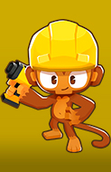

Selecione um Personagem
- 
-

Macaco Boomerang
O Macaco Boomerang é uma torre de classe primária que foi lançada no lançamento inicial de Bloons TD 6.
O Macaco Boomerang é uma torre de classe primária que foi lançada no lançamento inicial de Bloons TD 6.